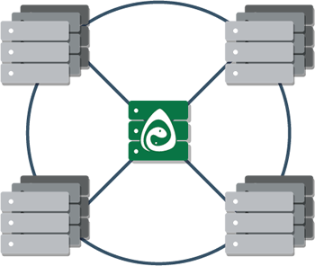
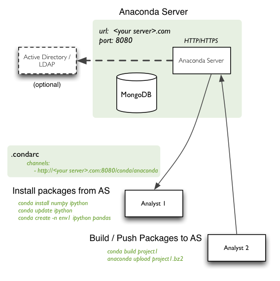

<img style="margin-left:35%;width:30%;" src="Anaconda_Logo_0702.png"></img> # Using Anaconda Cluster </img> --- # Using Anaconda cluster * Features * Walk-through of the major features in a simple configuration * Details on custom configurations * Bare metal set up * Airgap clusters * Working alongside Cloudera --- <img class="logo" src="Continuum_Logo_0702.png"></img> # Anaconda cluster features * Provisions and shuts down clusters on a cloud provider or uses your own hardware * Installs big data plugins like HDFS, Spark, Hive, Impala, and IPython notebook * Installs Python dependencies with <code>conda</code> remotely * Helps with file transfers and submitting jobs * Provides an easy way to learn and experiment with big data tools like Spark * Runs alongside other big data tools and services like Cloudera </img> --- <img class="logo" src="Continuum_Logo_0702.png"></img> # A simple installation using anaconda cloud: <pre><code style="bash"> $ conda install anaconda-client $ anaconda login $ conda install -c anaconda-cluster anaconda-cluster </code></pre> --- <img class="logo" src="Continuum_Logo_0702.png"></img> # Configuring a provider (public cloud like AWS) * Create a YAML text file at [~/.acluster/providers.yaml](http://docs.continuum.io/anaconda-cluster/config-provider). It covers security details. YAML is a format specification for configuration text files. <code class="bash"> <pre> aws_east: cloud_provider: ec2 keyname: psteinberg2.pem location: us-east-1 private_key: ~/.ssh/psteinberg2.pem secret_id: AKIAXXXXXX secret_key: XXXXXXXXXX security_group: anaconda-cluster-default </pre> </code> * [http://docs.continuum.io/anaconda-cluster/config-provider](http://docs.continuum.io/anaconda-cluster/config-provider) --- <img class="logo" src="Continuum_Logo_0702.png"></img> # Configuring a provider (bare metal) * In your [~/.acluster/providers.yaml](http://docs.continuum.io/anaconda-cluster/config-provider): * Set <code>cloud_provider</code> to <code>none</code> and give your private key path <code class="bash"> <pre> bare_metal: cloud_provider: none private_key: ~/.ssh/psteinberg2.pem </pre> </code> --- <img class="logo" src="Continuum_Logo_0702.png"></img> # Anaconda cluster steps * The providers.yaml is not required if you are connecting to an already started cluster. * Make sure you have downloaded the private_key from your provider and saved it at the location keyname on your local machine. You may need to change its permissions after downloading. <img style="width:60%;" src="create_key_pair.png"></img> <pre><code class="bash"> $ chmod 0600 ~/path/to/your_keyname </code></pre> --- <img class="logo2" src="anaconda_cluster_logo.png"></img> # Anaconda cluster steps * Set up a [cluster profile](http://docs.continuum.io/anaconda-cluster/config-profile), like this YAML text config file for a Spark, Impala, and Hive cluster. It sets the size of cluster and machine types as well as the cluster plugins. <pre> <code> $ cat ~/.acluster/profiles.d/hive_impala_spark_config.yaml name: hive_impala_spark_config provider: aws_east # refers to a provider already created node_id: ami-9a562df2 # Ubuntu 14.04 - EBS HVM user: ubuntu node_type: m3.2xlarge num_nodes: 2 root_size: 1000 # 1000 Gigabytes plugins: - hdfs: namenode_dirs: - /data/dfs/nn datanode_dirs: - /data/dfs/dn - spark-yarn - impala - hive </code> </pre> * [http://docs.continuum.io/anaconda-cluster/overview.html#profile-setup](http://docs.continuum.io/anaconda-cluster/overview.html#profile-setup) * Place other cluster profiles in <code>~/.acluster/profiles</code> if you need them. * You do not need a profile YAML if you are just connecting to a cluster that is already started. --- <img class="logo2" src="anaconda_cluster_logo.png"></img> # Anaconda cluster steps * Start a cluster by giving a profile argument that refers to a profile name from the YAML cluster profile configuration text files you have written. <pre> <code class="bash"> $ acluster create mycluster --profile hive_impala_spark_config </code> * This command creates the cluster configuration YAML file. * You can share this cluster YAML file to allow others to access your cluster. * This command provisions instances if using a cloud * This command installs plugins from profile --- <img class="logo2" src="anaconda_cluster_logo.png"></img> # Creating a cluster creates makes a cluster configuration file * Sharing the cluster config YAML file and private_key file allows access to cluster * The file below exists because we have done <code>acluster create ...</code> <pre><code class="bash"> $ cat ~/.acluster/clusters.d/mycluster.yaml </code></pre> <pre><code class="bash"> mycluster: created_at: '2015-07-23 08:54:05' ids: \- i-393cbed0 \- i-3a3cbed3 machines: compute: \- 54.237.86.244 head: \- 54.237.113.188 private_key: ~/.ssh/psteinberg2.pem profile: hive_impala_spark_config provider: aws_east user: ubuntu </code></pre> --- <img class="logo" src="Continuum_Logo_0702.png"></img> # Steps after creating a cluster * At this point, we're ready to use our new cluster. * Typical workflow may consist of: * Pushing data files and code to nodes * Remote conda installing Python dependencies * Installing anaconda cluster plugins like Hive or Impala if we did not have them in our profile * Remote ssh commands or ssh'ing into machines * Transferring output files from nodes to local machine * Shutting down cluster </img --- <img class="logo2" src="anaconda_cluster_logo.png"></img> # Working with Anaconda cluster * Push a file to all the nodes of cluster <pre><code class="bash"> $ acluster put some_file.py /tmp/some_file.py --target --all </code></pre> * Push a local directory to the head node but not others <pre><code class="bash"> $ acluster put ./tmp_data/ /tmp/data --target 0 </code></pre> --- <img class="logo2" src="anaconda_cluster_logo.png"></img> # Working with Anaconda cluster * Get files from specific workers <pre><code class="bash"> $ acluster get /tmp/some_file.txt some_file_0.txt --target 0 $ acluster get /tmp/some_file.txt some_file_1.txt --target 1 </code></pre> * Make sure to give them unique names on the destination end so they don't overwrite each other. --- <img class="logo2" src="anaconda_cluster_logo.png"></img> # Working with Anaconda cluster * Conda install Python dependencies and list what is installed <pre><code class="bash"> $ acluster conda install scipy scikit-learn pandas $ acluster conda list </code></pre> --- <img class="logo2" src="anaconda_cluster_logo.png"></img> # Install an anaconda cluster plugin if it is not already in cluster profile <pre><code class="bash"> $ acluster install hive impala </code></pre> --- <img class="logo2" src="anaconda_cluster_logo.png"></img> # Working with Anaconda cluster * Submit any Python job or a job for running by Spark master <pre><code class="bash"> $ acluster submit image_mapper.py </code></pre> * Streams output as it is generated --- <img class="logo2" src="anaconda_cluster_logo.png"></img> # Working with Anaconda cluster * Run any remote command on some or all nodes: <pre><code class="bash"> $ acluster cmd "cd /tmp/my_new_code && python setup.py install" --target --all </code></pre> * The <code>--target</code> argument controls which node(s) run the command * Output from each node is piped back --- <img class="logo2" src="anaconda_cluster_logo.png"></img> # Working with Anaconda cluster * Get a list of the clusters running <pre><code class="bash"> $ acluster list </code></pre> <pre><code> mycluster: nodes: \- 54.237.113.188 (head) \- 54.237.86.244 </code></pre> --- <img class="logo2" src="anaconda_cluster_logo.png"></img> # At any point we can ssh into a node * SSH to the head node by default <pre><code> $ acluster ssh </code></pre> * Or to a compute node, using 0-based node numbers <pre><code> $ acluster ssh 1 # the first compute node </code></pre> * The cluster profile YAML sets the username that <code>acluster ssh</code> uses --- <img class="logo2" src="anaconda_cluster_logo.png"></img> # Working with Anaconda cluster * Anaconda cluster sets up the web services associated with Hadoop, YARN (scheduler of hadoop) and Spark * Get the head node's IP address from <code>acluster list</code> * Hadoop distributed file system browser is on port 50070 * YARN cluster scheduler is on port 9026 <pre><code> $ acluster open yarn # finds the right IP:port for browser </code> </pre> * IPython notebook is on port 8888 <pre><code> $ acluster open notebook # finds the right IP:port for browser </code></pre> --- <img class="logo2" src="anaconda_cluster_logo.png"></img> # Working with Anaconda cluster * Shutdown the cluster (takes care of provisioning if using cloud services) <pre><code class="bash"> $ acluster destroy mycluster </code></pre> * Confirm yes/no to prevent accidental cluster shutdown: <pre><code class="bash"> Are you sure you want to destroy cluster "mycluster"? [y/N]: y INFO: Cluster "mycluster" destroyed Cluster destroyed </code></pre> --- <img class="logo2" src="anaconda_cluster_logo.png"></img> # List the profiles or providers created at any point <pre><code> $ acluster list providers $ acluster list profiles </code></pre> * When profiles or providers are listed, it indicates the YAML text file(s) you have written can be parsed. --- <img class="logo2" src="anaconda_cluster_logo.png"></img> # Anaconda cluster supports a number of plugins, not just Spark * Miniconda * Elasticsearch * Ganglia * HDFS * Hive * Impala * IPython Parallel * Jupyter Notebook * Kibana * Logstash * Salt * Spark (standalone mode or YARN) * Storm * YARN * ZooKeeper --- <img class="logo2" src="anaconda_cluster_logo.png"></img> # At any point during testing a cluster, you can add more plugins <pre><code class="bash"> $ acluster install --help Usage: acluster install [OPTIONS] COMMAND [ARGS]... ... Commands: conda Install (mini)conda elasticsearch Install Elasticsearch ganglia Install Ganglia hdfs Install HDFS hive Install Hive impala Install Impala ipython-parallel Install IPython Parallel kibana Install Kibana notebook Install Jupyter Notebook logstash Install Logstash salt Install Salt spark-standalone Install Spark (standalone) spark-yarn Install Spark (YARN) storm Install Storm yarn Install YARN zookeeper Install Zookeeper </code></pre> --- <img class="logo2" src="anaconda_cluster_logo.png"></img> # More detail: anaconda server with anaconda cluster * Make an environment file, perhaps testing locally, then push it to anaconda server * Example environment.yaml file: <pre><code class="bash"> name: pg2 dependencies: - ipython - ipython-notebook - setuptools - matplotlib - numba - numpy - pandas=0.16.1 - python=3.4.3 - psycopg2 - jsonschema - pip: - testing.postgresql </code></pre> --- <img class="logo2" src="anaconda_cluster_logo.png"></img> # More detail: anaconda server with anaconda cluster * Upload a local conda environment to anaconda server <pre><code> $ conda env upload pg2 </code></pre> * This example <code>pg2</code> refers to the environment name in the environment.yaml file in the previous slide. --- <img class="logo2" src="anaconda_cluster_logo.png"></img> # More detail: anaconda server with anaconda cluster * Later use the anaconda server's saved environment in your cluster <pre><code> $ acluster conda env create psteinberg/pg2 </code></pre> * The command above installs on the cluster an environment called <code>pg2</code> that user psteinberg has uploaded to anaconda server --- <img class="logo2" src="anaconda_cluster_logo.png"></img> # More detail: anaconda server with anaconda cluster * Upload an iPython notebook to your anaconda server <pre><code class="bash"> $ anaconda notebook upload Getting_Started_with_PySpark.ipynb </code></pre> <pre><code class="bash"> Getting_Started_with_PySpark.ipynb has been uploaded. You can visit your notebook at http://notebooks.anaconda.org/psteinberg/getting_started_with_pySpark </code></pre> --- <img class="logo2" src="anaconda_cluster_logo.png"></img> # More detail: anaconda server with anaconda cluster * Download a notebook that has been uploaded to your anaconda server <pre><code class="bash"> $ anaconda notebook download psteinberg/getting_started_with_pySpark </code></pre> <pre><code class="bash"> Using anaconda-server api site http://api.anaconda.org psteinberg/getting_started_with_pySpark has been downloaded as Getting_Started_with_PySpark.ipynb. </code></pre> --- <img class="logo2" src="anaconda_cluster_logo.png"></img> # More detail: anaconda server with anaconda cluster * How to upload a Python package to your anaconda server * Step 1 make a .binstar.yml <pre><code class="bash"> $ cd myorg.package1 # into the package directory $ # set conda build options in .binstar.yml $ cat .binstar.yml </code></pre> <pre><code class="bash"> package: myorg.package1 user: psteinberg platform: \- linux-64 \- linux-32 engine: \- python=2 \- python=3 env: # environment variables \- MY_ENV=A CC=gcc \- MY_ENV=B </code></pre> --- <img class="logo2" src="anaconda_cluster_logo.png"></img> # More detail: anaconda server with anaconda cluster * How to upload a Python package to your anaconda server * Step 2 make a meta.yaml file in the package directory and use <code>git tag</code> to make a version tag corresponding to the <code>git_rev</code> in meta.yaml <pre><code class="bash"> $ cat meta.yaml package: name: myorg.package1 version: "1.2.8" source: git_rev: 1.2.8 git_url: https://github.com/PeterDSteinberg/myorg.package1 requirements: build: \- python \- setuptools run: \- python </code></pre> --- <img class="logo2" src="anaconda_cluster_logo.png"></img> # More detail: anaconda server with anaconda cluster * How to upload a Python package to your anaconda server * Step 3 Build the package and upload <pre><code> $ cd myorg.package1 $ conda config --set anaconda_upload yes # upload on successful build $ conda build . </code></pre> <pre><code> Removing old build environment Removing old work directory BUILD START: myorg.package1-1.2.8-py27_0 ...(abbreviated) Using anaconda-server api site http://api.anaconda.org detecting package type ... conda extracting package attributes for upload ... done Uploading file psteinberg/myorg.package1/1.2.8/osx-64/myorg.package1-1.2.8-py27_0.tar.bz2 </code></pre> --- <img class="logo2" src="anaconda_cluster_logo.png"></img> # More detail: anaconda server with anaconda cluster * Pip install using a custom anaconda server url <pre><code class="bash"> $ pip install --extra-index-url https://your-server-url>/USERNAME/simple some_package </code></pre> --- <img class="logo2" src="anaconda_cluster_logo.png"></img> # More detail: anaconda server with anaconda cluster * Control access rights within your organization's anaconda server * Use tokens created by <code>anaconda auth</code> * The <code>scope</code> argument controls the authorization <pre><code class="bash"> $ TOKEN=$(anaconda auth --create --name YOUR-TOKEN-NAME --scopes 'repos conda:download') </code></pre> --- <img class="logo2" src="anaconda_cluster_logo.png"></img> # More detail: anaconda server with anaconda cluster * Then use the TOKEN to add a private repository to your conda <pre><code class="bash"> $ USERNAME=psteinberg $ channel="https://your-anaconda-server.com:8080/t/${TOKEN}/${USERNAME}" $ conda config --add channels ${channel} </code></pre> --- <img class="logo2" src="anaconda_cluster_logo.png"></img> # More detail: anaconda server with anaconda cluster * With anaconda server it is easy to control versions * Experiment in a channel with a name like <code>test</code> * After testing, <code>anaconda channel --copy</code> from that channel if you like your package <pre><code> $ anaconda upload /path/to/mypackage1-2.0.tar.bz2 --channel test $ # Download the package from test and see if it works, then $ anaconda channel --copy test main $ # now you can install the uploaded and tested package with $ conda install mypackage -c USERNAME </code></pre> --- <img class="logo2" src="anaconda_cluster_logo.png"></img> # More detail: anaconda server with anaconda cluster * Search for packages that could be installed on cluster <pre><code class="bash"> $ anaconda search myorg #partial matching </code></pre> </img> --- <img class="logo2" src="anaconda_cluster_logo.png"></img> # More detail: anaconda server with anaconda cluster * Setting up an airgapped bare metal cluster * Step 1 make a bare_metal provider in <code>~/.acluster/providers.yaml</code>: <pre><code> bare_metal: cloud_provider: none private_key: ~/.ssh/psteinberg2.pem </code></pre> --- <img class="logo2" src="anaconda_cluster_logo.png"></img> # More detail: anaconda server with anaconda cluster * Setting up an airgapped bare metal cluster * Step 2 make a profile in <code>~/.acluster/profiles.d/</code> * Point to your anaconda server instance <pre><code class="bash"> name: myprofile provider: bare_metal node_id: bare_metal node_type: bare_metal user: ubuntu num_nodes: 4 nodes: head: \- 192.168.1.1 compute: \- 192.168.1.2 \- 192.168.1.3 \- 192.168.1.4 anaconda_url: http://[your-anaconda-server-ip]:9000/Miniconda-latest-Linux-x86_64.sh conda_channels: \- http://[your-anaconda-server-ip]:8080/conda/anaconda-cluster \- http://[your-anaconda-server-ip]:8080/conda/anaconda \- defaults </code></pre> --- <img class="logo2" src="anaconda_cluster_logo.png"></img> # More detail: anaconda server with anaconda cluster * Starting a bare metal airgapped cluster * Refer to the profile just created <pre><code> $ acluster create --profile myprofile mycluster </code></pre> --- <img class="logo2" src="anaconda_cluster_logo.png"></img> # Anaconda cluster and Spark * Make sure your script is configured for the HDFS_MASTER set up by anaconda cluster <pre><code class="Python"> from pyspark import SparkConf from pyspark import SparkContext HDFS_MASTER = '1.2.3.4' # replace with your head node's IP conf = SparkConf() conf.setMaster('yarn-client') conf.setAppName('spark-wordcount') conf.set('spark.executor.instances', 10) sc = SparkContext(conf=conf) </code></pre> --- <img class="logo2" src="anaconda_cluster_logo.png"></img> # Anaconda cluster and Spark * With the configuration of yarn-client in the script, we can submit to master with: <pre><code> $ acluster submit your_script_name.py </code></pre> --- <img class="logo2" src="anaconda_cluster_logo.png"></img> # Anaconda cluster is versatile with respect to Python version * For example, install a Python 2.7 website's dependencies: <pre><code> $ acluster cmd 'conda create -n new_website python=2.7 django' </code></pre> * Or a Python 3.4 website: <pre><code> $ acluster cmd 'conda create -n new_website python=3.4 django' </code></pre> --- # Setting up your anaconda server instance  </img> --- # Using Anaconda cluster with Cloudera </img> --- <img class="logo2" src="anaconda_cluster_logo.png"></img> # More help on anaconda cluster * Example Anaconda cluster usage in an image analysis problem * [https://github.com/ContinuumIO/image-analyzer/blob/master/run_helper.sh](https://github.com/ContinuumIO/image-analyzer/blob/master/run_helper.sh) * PySpark and image analysis tutorial notebooks are on nbviewer: * [http://nbviewer.iPython.org/github/continuumio/image-analyzer/tree/master/](http://nbviewer.iPython.org/github/continuumio/image-analyzer/tree/master/) <code class="python"> $ git clone https://github.com/ContinuumIO/image-analyzer/ </code> * Full anaconda cluster documentation * [http://docs.continuum.io/anaconda-cluster/index](http://docs.continuum.io/anaconda-cluster/index)